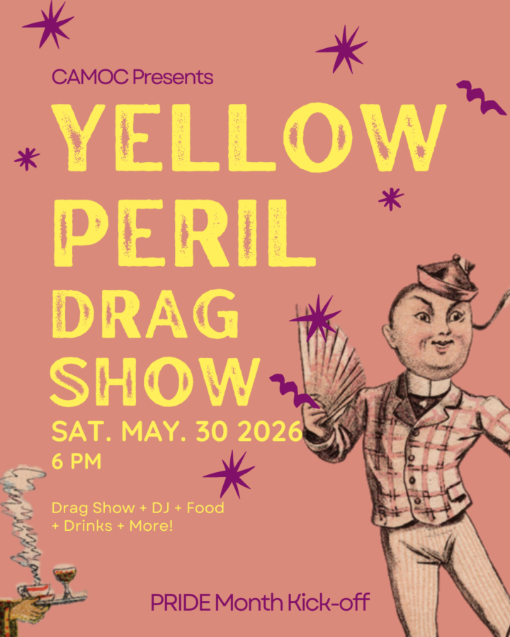

Yellow Peril Drag Show
Show your Pride in Chicago’s queer Asian community here in the heart of Chinatown ✨ To close out AANHPI Heritage Month and set off upcoming Pride Month festivities, CAMOC and the Heritage Museum of Asian Art are joining forces to bring back our Pride Kick-off party to celebrate Chicago’s queer AANHPI community–too often overlooked, underestimated, and asked to tread softly.
Space is limited. Ticket includes food, beer, and one specialty cocktail. While you’re here, you can explore Language of Abstraction after-hours on FL1.
Get Tickets Here: https://www.zeffy.com/en-US/ticketing/yellow-peril